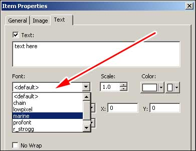

GUIs in Quake4 use Truetype fonts (*.ttf) converted into *.tga images along with a font data file (*.fontdat) that describes where within the *.tga every character resides. These *.tga files can be edited in any standard image editing software that allows Alpha Channel editing. The characters are all located in this Alpha Channel.
Quake 4 uses three font point sizes, which one it chooses to use is dependent on the Text Scale attribute of the specified windowDef. The three font point sizes are: 12, 24 and 48. Below is a chart relating to textscale and which point size will be used.
textscale less than or equal to 0.3 |
12 |
textscale larger than 0.3 and 0.6 or less. |
24 |
textscale larger than 0.6 |
48 |
A single font can have more than one *.tga attached to it, depending on the export size of the character and how many characters are in the font. Example font file names from Quake 4:
marine_12.fontdat marine_12.tga marine_24.fontdat marine_24.tga marine_48.fontdat marine_48.tga
To select fonts within the GUIEditor, select the dropdown box and choose the font you wish to use.

The list of fonts is populated when the GUIEditor is started, so if you add a font you must restart the GUIEditor. Add fonts to the following folder within Quake4:
../q4base/fonts/
To import fonts into the game you need to use the Q4Font tool.